In most aircraft applications, air-air heat exchangers are employed in the Air-cycle machine (ACM). For the present implementation, a dynamic 1-D lumped parameter model is employed for characterizing the heat exchanger for B737 applications. The dynamic model is based on Ref. [4]
There are several types of compact heat exchanger, but the offset strip-fin has been the most widely used fin geometry for industries that require lightweight high-performance exchangers, due to its high heat transfer relative to heat exchanger volume, an important characteristic when considering the often reduced space available for its positioning.
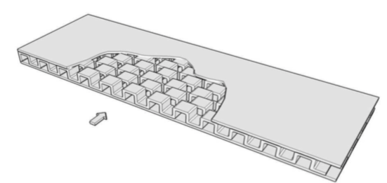
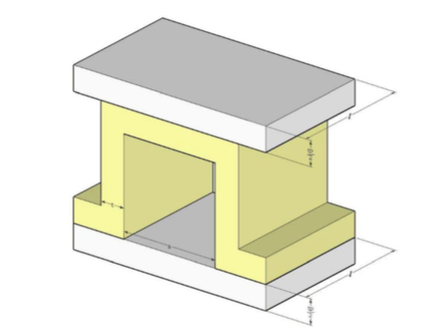
s: Transverse spacing (free flow width).
h: Free flow height.
t: Fin thickness.
l: Fin length.
Based on the above figure, the hydraulic diameter may be defined as:
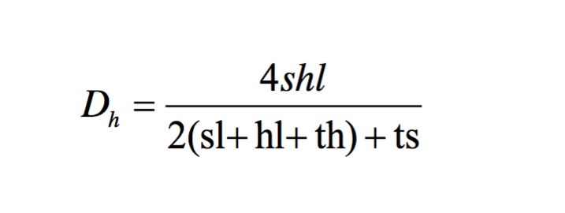
The correlation for the friction factor is in the form of a power-law of the type is given by:
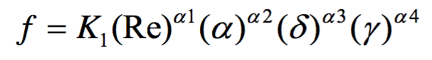
K1, a1, a2, a3, a4: Power-law coefficients.
Re: Reynolds number.
alpha = s/h; delta = t/l; gamma = t/s;
The mass flow rate in terms of the friction factor is given by:
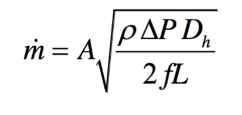
The mass flow rate in terms of the friction factor is given by:
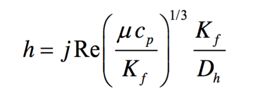
Where, j is the Coulburn factor, Kf is the fluid thermal conductivity, cp is the fluid specific heat at constant pressure, and mu is the fluid viscosity.
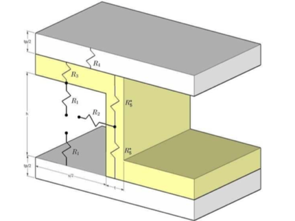
Heat transfer will occur in the fin through five different types of resistances, as presented in Figure 3. This resistances model both convection (using the heat transfer coefficient calculated previously) and conduction. After defining the equations for each resistance, a thermal circuit is built, and an equivalent thermal resistance Req is calculated. The details of deriving the equivalent thermal resistance can be found in Ref. [4]. Until this point, the basis of the model have been developed, the mass flow can be calculated based on the heat exchanger geometry, as are the thermal resistances. The last part is the model itself involves the heat exchange between the cold and hot fluids to/from the core mass, and the dynamics of the temperature in this core. Figure 5 presents the representation of this model with three main parts: hot fluid control volume, core mass and cold fluid control volume.
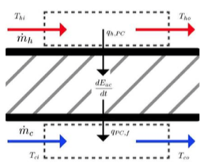
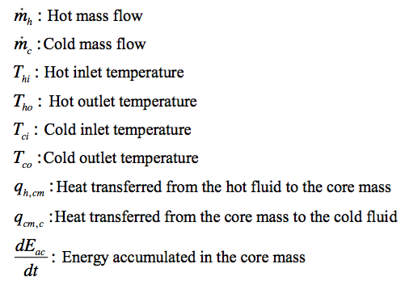
Representation of the heat lost by the hot fluid due to the contact with the surface of the core mass is given by: (Eq 5.1.10)
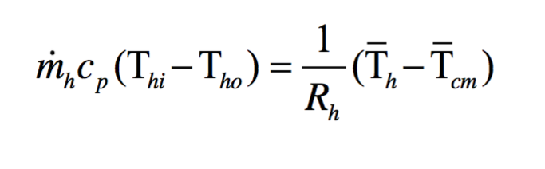
It should be noted here that all developments are based on mean temperature: (Eq 5.1.11)
The use of mean temperatures is of great importance in this model, since it allows the heat transfer, and therefore the core mass temperature, to be obtained only as a function of the inlet temperatures of the fluids. It is required an expression for the mean hot temperature, which is not dependent on the fluid outlet temperature, which is to be determined. Isolating the hot outlet temperature in Eq.5.1.11 and replacing into Eq. 5.1.10 yields after some rearrangement: (Eq 5.1.12)
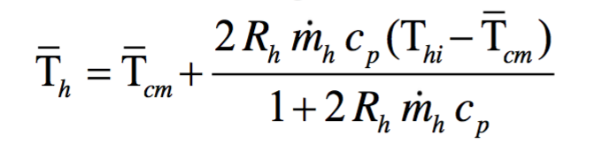
Using the same procedure for the cold line yields: (Eq 5.1.13)
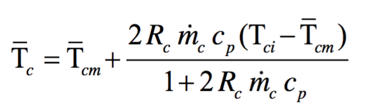
Equations 5.1.12 and 5.1.13 present the mean cold and hot fluid temperatures as a function of the mean core mass temperature and known parameters, such as mass flow and equivalent thermal resistances (Rh and Rc).The transient response of the core energy is derived as:
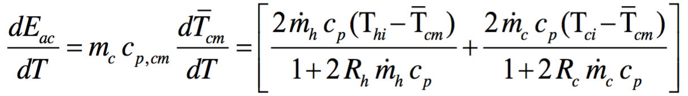
Here is a screenshot of the heat exchanger mask, it has two tabs. The first tab HX Parameters contains all the parameters of the heat exchange. The second tab Fin Parameters contains inputs for all the parameters of the fin.
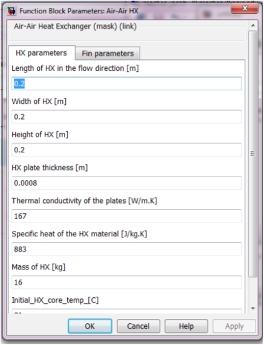
| Input | Units | Description |
|---|---|---|
| Ram air inflow bus: Ram air inflow bus: Ram air inflow bus: |
kg/s K kPa |
Ram air required to run the ACM Ram air temperature Ram air pressure |
| Bleed air inflow bus: Bleed air inflow bus: Bleed air inflow bus: |
kg/s K kPa |
Bleed air from engine Bleed air temperature upstream of heat exchange Bleed air pressure upstream of heat exchange |
| Output | Units | Description |
|---|---|---|
| Ram air outflow bus: Ram air outflow bus: Ram air outflow bus: |
kg/s K kPa |
Ram air at heat exchange exit Ram air temperature at heat exchange exit Ram air pressure at heat exchange exit |
| Bleed air outflow bus: Bleed air outflow bus: Bleed air outflow bus: |
kg/s K kPa |
Bleed air at heat exchange exit Bleed air temperature downstream of heat exchange Bleed air pressure downstream of heat exchange |
| Misc. Data | Miscellaneous parameters such as Re, j, etc. |